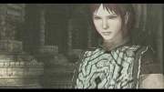
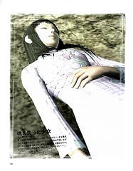
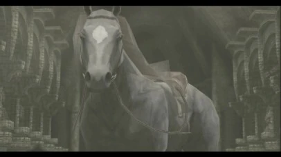
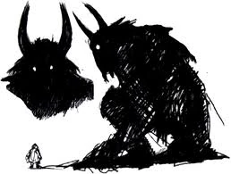
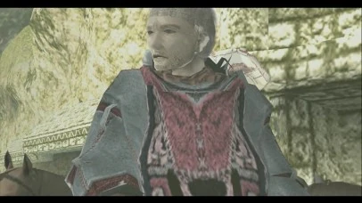

Shadow of the Colossus (ワンダと巨像 Wanda to Kyozō?, lit. «Wander y el coloso»), en español La sombra del coloso, es un videojuego de acción-aventura, desarrollado y publicado por Sony Computer Entertainment (SCEI) para la videoconsola PlayStation 2. El juego fue publicado en Norteamérica y Japón en octubre de 2005, y posteriormente en Europa, en febrero de 2006. Fue creado por el Estudio Internacional de Producción 1 de SCEI, el mismo grupo de desarrollo responsable del éxito de culto.
El juego trata de un joven, conocido únicamente como Wander (del inglés wanderer, ‘alguien que deambula’), que debe viajar a caballo a través de un vasto territorio y derrotar a 16 gigantes, conocidos colectivamente como «Colossi» («colosos» en español) para devolver la vida a una joven. El juego es inusual entre los videojuegos de acción-aventura por el hecho de que no hay pueblos o calabozos para explorar, no hay personajes con los que interactuar y no hay otros enemigos a los que enfrentarse aparte de los colosos.Shadow of the Colossus ha sido descrito como un juego de rompecabezas, ya que hay que descubrir y explotar la debilidad de cada coloso antes de poder derrotarlo.
Personajes principales

Wander |

Mono |

Agro |

Dormin |

Lord Emon |